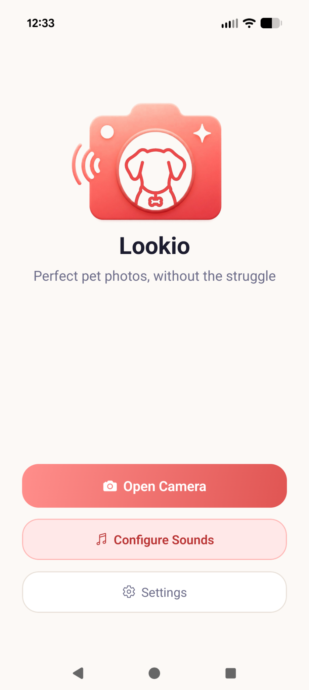
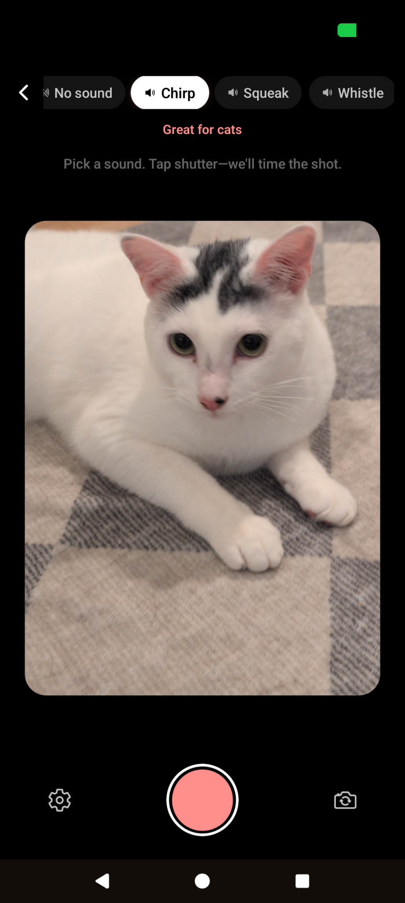
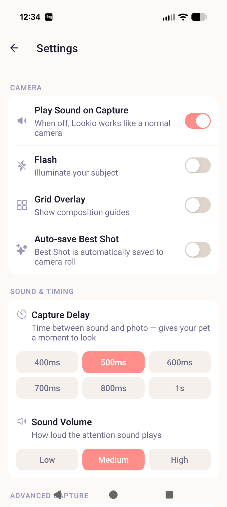
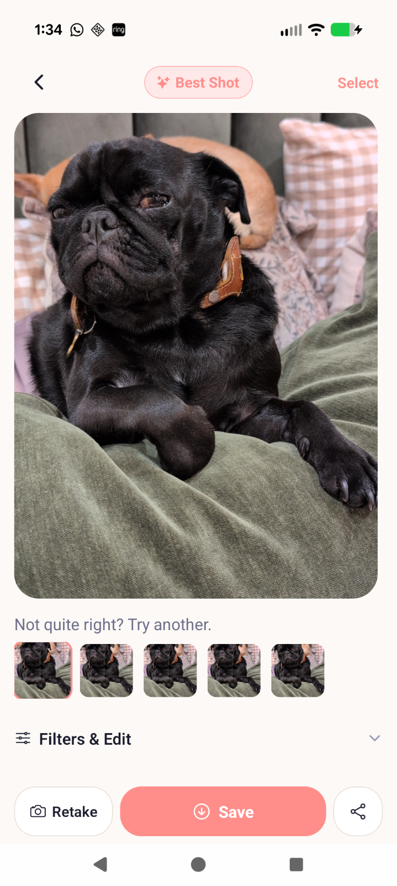

Lookio
A mobile app designed to capture better moments by getting your subject’s attention at the right time.
Anyone who’s tried to photograph a dog or a toddler knows the problem — they look anywhere except the camera the moment you tap the shutter.

Overview
Lookio is a mobile camera app designed to help capture better photos of pets and children by using sound to guide attention at the moment of capture.
The idea came from a simple frustration — I have multiple pets (and foster cats), and getting a single usable photo is surprisingly difficult. Most shots fail not because of camera quality, but because the subject isn’t looking at the right moment.
I built Lookio as a product exploration around timing, attention, and improving real-world outcomes through small but intentional interactions.
What I Focused On
The goal wasn’t just to take photos — it was to increase the likelihood of getting a good one.
I focused on designing an experience that guides the user toward better outcomes without adding complexity.
Key areas:
- Designing around real-world behavior (movement, unpredictability, short attention spans)
- Timing-based interaction (sound → attention → capture)
- Reducing friction in the capture flow
- Creating a simple, opinionated user experience

Product Thinking
A key insight was that most photos fail due to timing and attention — not camera quality.
Lookio addresses this by introducing a lightweight interaction just before capture, improving the odds of a successful shot without requiring user effort.
- Uses sound cues to draw attention naturally
- Supports burst capture to increase success rate
- Prioritizes simplicity over feature overload
- Explores automatic photo selection based on quality signals
Tradeoff
I deliberately avoided adding filters or editing tools. The core bet is that timing matters more than post-processing — if you get the right moment, you need less editing.
UX & Design Decisions
The interface is intentionally minimal, allowing the user to focus on the subject rather than the controls.
The experience is designed to feel fast, responsive, and unobtrusive.
- Minimal UI to reduce distraction during capture
- Clear feedback after capture (review and selection)
- Designed for one-handed, real-world use
- Thoughtful defaults to avoid configuration overhead
Example decision
I added a configurable delay between the sound and the shutter.Too fast, and the subject doesn’t react.
Too slow, and the moment passes.This small timing window ended up being one of the most important parts of the experience.

Capture & Review Flow
Once a photo is taken, the experience shifts to quickly selecting the best result.
Burst capture increases the chances of success, while the review screen keeps the selection process fast and lightweight.

Tech
Built as a mobile application using React Native and Expo, with a focus on rapid iteration and experimentation.
Why this approach
Using React Native + Expo allowed me to iterate quickly on interaction timing and UX decisions without heavy native overhead.The product is still evolving, so speed of iteration mattered more than early optimization.
Result
Lookio is an ongoing exploration of how small, well-timed interactions can improve real-world outcomes.
In practice, the timing between sound and capture turned out to be the most critical variable — getting that window right made the difference between a missed shot and a usable one.
This project reflects my interest in building products where UX, behavioral insight, and engineering decisions are tightly connected.
— Dan Thoreson